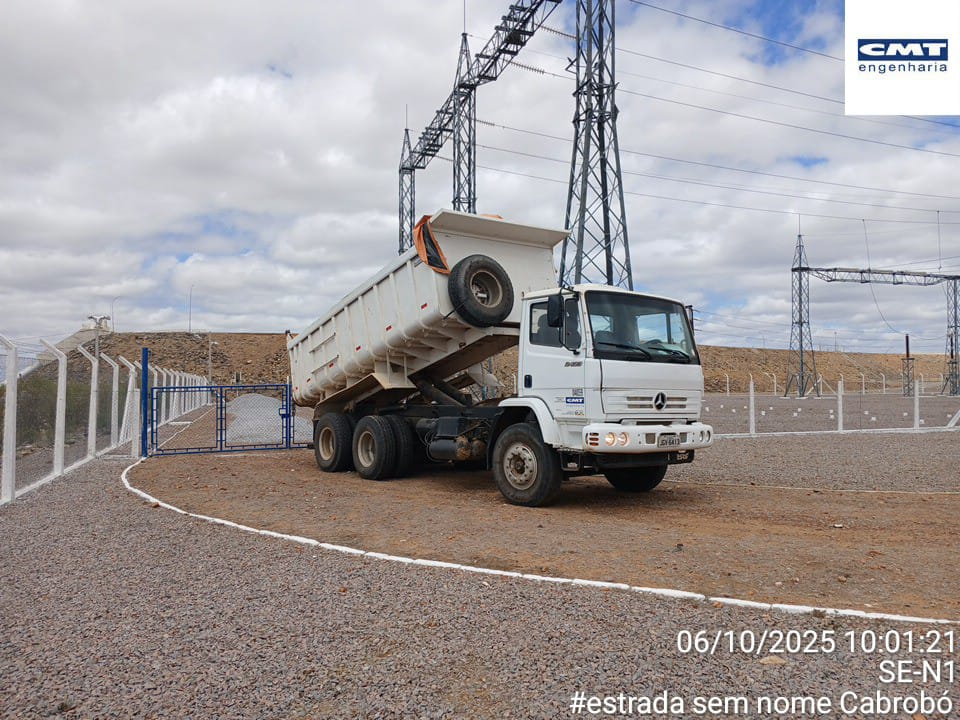
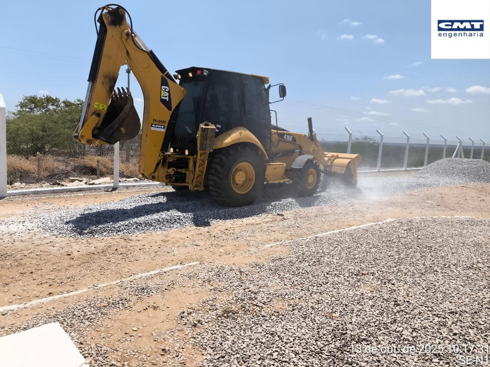
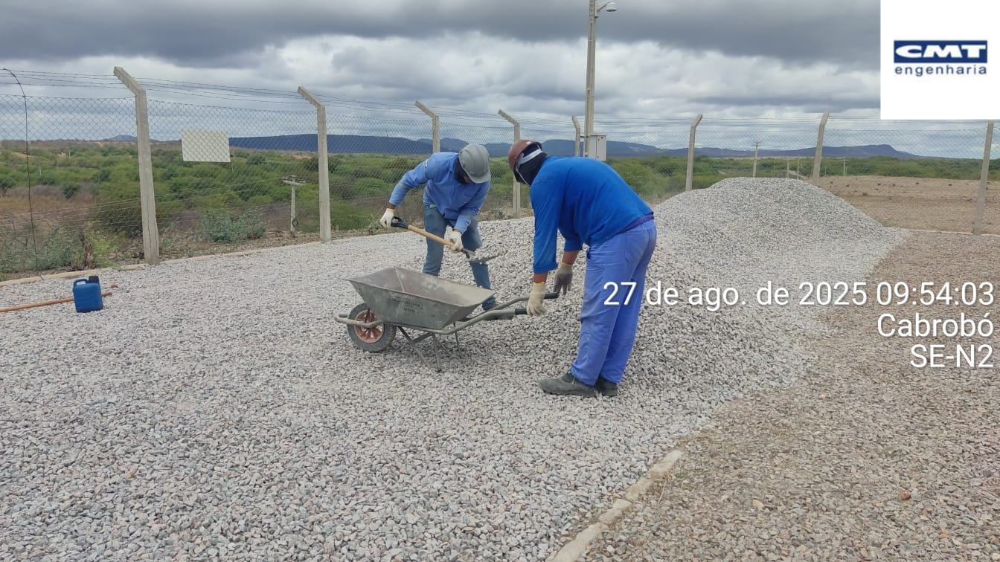
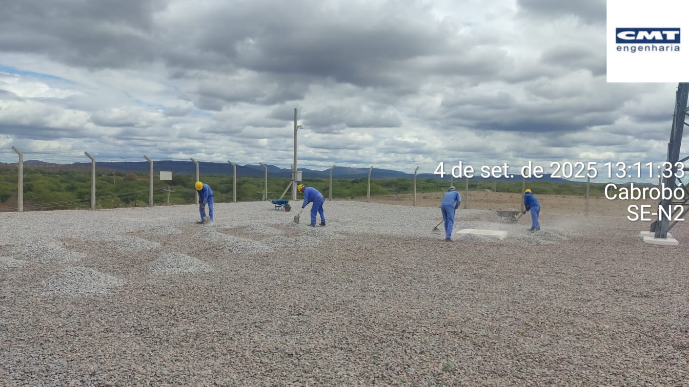
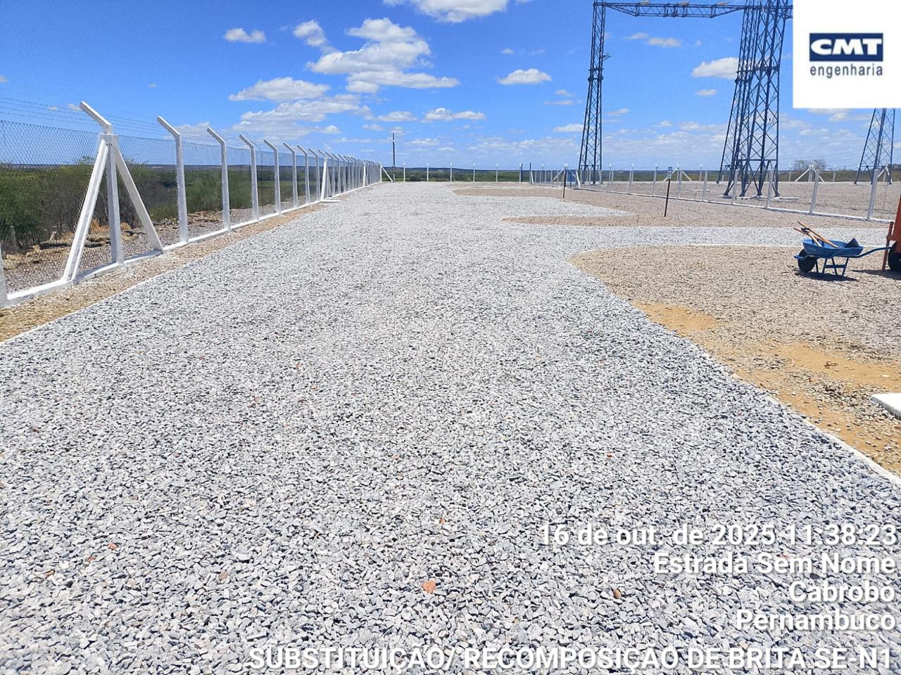

Recomposição de Brita da Subestação
início
conteúdo
atual
Recomposição do arruamento da subestação com
brita

abastecimento com caminhão basculante

distribuição da brita

distribuição da brita

distribuição da brita

distribuição da brita